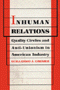

Labor and Social Change, edited by Paula Rayman
and Carmen Sirianni, includes books on workplace issues like worker
participation, quality of work life, shorter hours, technological
change, and productivity, as well as union and community organizing
and ethnographies of particular occupations. |

|
Education
for Struggle
The American Labor Colleges of the 1920s and 1930s
Altenbaugh, Richard J. 339 pp • 6x9 •
Spring 1990
cloth 978-0-87722-680-2
Excerpt available |

|
The
Union Inspiration in American Politics
The Autoworkers and the Making of a Liberal Industrial Order
Amberg, Stephen 368 pp • 6x9 • Fall
1994
cloth 978-1-56639-189-4
Excerpt available |

|
Journeys
of Women in Science and Engineering
No Universal Constants
Ambrose, Susan A., Kristin L. Dunkle, Barbara B. Lazarus, Indira Nair
and Deborah A. Harkus 512 pp • 7x10 •
Spring 1997
paper 978-1-56639-528-1
cloth 978-1-56639-527-4
Excerpt available |
|
Reducing
Workweeks to Prevent Layoffs
The Economic and Social Impacts of Unemployment Insurance-Supported
Work Sharing
Best, Fred, foreword by Herbert J. Gans 228
pp • Fall 1987
cloth 978-0-87722-506-5 |
|
Beyond
the Market and the State
New Directions in Community Development
edited by Bruyn, Severyn T. and James Meehan 272
pp • Fall 1987
cloth 978-0-87722-484-6 |

|
Down
the Backstretch
Racing and the American Dream
Case, Carole 224 pp • Fall 1991
cloth 978-0-87722-846-2
Excerpt available |

|
Black
Corporate Executives
The Making and Breaking of a Black Middle Class
Collins, Sharon M. 216 pp • 5.5x8.25
• Fall 1996
paper 978-1-56639-474-1
cloth 978-1-56639-473-4
Excerpt available |

|
Worktime
and Industrialization
An International History
edited by Cross, Gary 256 pp • Fall 1988
cloth 978-0-87722-582-9 |

|
Politics
and the Class Divide
Working People and the Middle Class Left
Croteau, David 320 pp • 6x9 • Fall
1994
paper 978-1-56639-255-6
cloth 978-1-56639-254-9
Excerpt available |

|
Organizing
the Movement
The Roots and Growth of ACORN
Delgado, Gary 256 pp • Fall 1985
paper 978-0-87722-492-1
cloth 978-0-87722-393-1 |

|
Labor
at the Ballot Box
The Massachusetts Prevailing Wage Campaign of 1988
Erlich, Mark 232 pp • Fall 1990
cloth 978-0-87722-727-4 |

|
Work
on the Waterfront
Worker Power and Technological Change in a West Coast Port
Finlay, William 224 pp • 5.5x8.25 •
Spring 1988
cloth 978-0-87722-523-2 |

|
Toxic
Work
Women Workers at GTE Lenkurt
Fox, Steve 192 pp • Fall 1991
paper 978-0-87722-895-0
cloth 978-0-87722-816-5 |

|
Work
and Democracy in Socialist Cuba
Fuller, Linda O. 311 pp • 6x9 •
Spring 1992
cloth 978-0-87722-893-6 |

|
Communities
in Economic Crisis
Appalachia and the South
edited by Gaventa, John, Barbara Ellen Smith and Alex Willingham
336 pp • Fall 1989
paper 978-0-87722-650-5
cloth 978-0-87722-649-9 |

|
On
Strike at Hormel
The Struggle for a Democratic Labor Movement
Green, Hardy, foreword by David Moberg 369
pp • Fall 1989
paper 978-0-87722-832-5
cloth 978-0-87722-635-2 |

|
Inhuman
Relations
Quality Circles and Anti-Unionism in American Industry
Grenier, Guillermo J. 256 pp • Fall 1987
paper 978-0-87722-632-1
cloth 978-0-87722-502-7 |

|
Broken
Promise
The Subversion of U.S. Labor Relations Policy, 1947-1994
Gross, James A. 422 pp • 6x9 • Fall
2003
paper 978-1-59213-225-6
Excerpt available |

|
Lost
Talent
Women in the Sciences
Hanson, Sandra L. 240 pp • 6x9 •
Spring 1996
cloth 978-1-56639-446-8
Excerpt available |

|
Working
Time in Transition
The Political Economy of Working Hours in Industrial Nations
edited by Hinrichs, Karl, William Roche and Carmen Sirianni
352 pp • Spring 1991
cloth 978-0-87722-757-1 |

|
The
Psychodynamics of Organizations
edited by Hirschhorn, Larry and Carole K. Barnett 288
pp • 6x9 • Spring 1993
paper 978- 1-56639-021-7
cloth 978-1-56639-020-0 |

|
We
Can't Eat Prestige
The Women Who Organized Harvard
Hoerr, John
280 pp • 6x9 • Spring
1997
paper 978-1-56639-925-8
cloth 978-1-56639-535-9
Excerpt available |

|
Their
Day in the Sun
Women of the Manhattan Project
Howes, Ruth H. and Caroline C. Herzenberg, foreword by Ellen C. Weaver
280 pp • 6x9 • Fall 1999
paper 978-1-59213-192-1
cloth 978-1-56639-719-3
Excerpt available |

|
Work
Without End
Abandoning Shorter Hours for the Right to Work
Hunnicutt, Benjamin Kline 416 pp • Spring
1988
paper 978-0-87722-763-2
cloth 978-0-87722-520-1 |

|
Kellogg's
Six-Hour Day
Hunnicutt, Benjamin Kline 288 pp • 6x9
• Fall 1996
paper 978-1-56639-448-2
cloth 978-1-56639-447-5
Excerpt available |

|
The
Challenge of Restructuring
North American Labor Movements Respond
edited by Jenson, Jane and Rianne Mahon 488
pp • 6x9 • Fall 1992
cloth 978-0-87722-981-0 |

|
Professions
and the State
Expertise and Autonomy in the Soviet Union and Eastern Europe
edited by Jones, Anthony 256 pp • Spring
1991
cloth 978-0-87722-801-1 |

|
Chaos
on the Shop Floor
A Worker's View of Quality, Productivity, and Management
Juravich, Tom 160 pp • Spring 1985
paper 978-0-87722-561-4
cloth 978-0-87722-375-7 |

|
Engineering
Culture
Control and Commitment in a High-Tech Corporation
Kunda, Gideon 320 pp • 6x9 • Fall
1991
paper 978-1-56639-075-0
cloth 978-0-87722-845-5
Excerpt available |

|
Newcomers
in Workplace
Immigrants and the Restructing of the U.S Economy
edited by Lamphere, Louise, Alex Stepick and Guillermo Grenier
320 pp • 6x9 • Fall 1993
paper 978-1-56639-131-3
cloth 978-1-56639-124-5 |

|
Working
in the Service Society
edited by Macdonald, Cameron Lynne and Carmen J. Sirianni 376
pp • 6x9 • Fall 1996
paper 978-1-56639-480-2
cloth 978-1-56639-479-6 |

|
One-Eyed
Science
Occupational Health and Women Workers
Messing, Karen, foreword by Jeanne Mager Stellman 264
pp • 5.5x8.2 • Spring 1998
paper 978-1-56639-598-4
cloth 978-1-56639-597-7
Excerpt available |

|
Technology
Assessment
A Feminist Perspective
Morgall, Janine Marie 264 pp • 5.5x8.25
• Fall 1993
paper 978-1-56639-091-0
cloth 978-1-56639-090-3 |

|
Liberalism
at Work
The Rise and Fall of OSHA
Noble, Charles 304 pp • Spring 1989
paper 978-0-87722-665-9
cloth 978-0-87722-421-1 |

|
Beyond
Employment
Time, Work, and the Informal Economy
Offe, Claus and Rolf G. Heinze, translated by Alan Braley 248
pp • 6x9 • Spring 1992
cloth 978-0-87722-951-3 |

|
Solidarity
and the Politics of Anti-Politics
Opposition and Reform in Poland since 1968
Ost, David 272 pp • Fall 1989
paper 978-0-87722-900-1
cloth 978-0-87722-655-0 |

|
Pedal
to the Metal
The Work Life of Truckers
Ouellet, Lawrence J. 272 pp • 6x9 •
Spring 1994
paper 978-1-56639-176-4
cloth 978-1-56639-175-7 |

|
Between
Women
Domestics and Their Employers
Rollins, Judith 256 pp • 5.5x8.25 •
Fall 1985
paper 978-0-87722-491-4
cloth 978-0-87722-383-2 |

|
The
Origins of Southern Sharecropping
Royce, Edward 288 pp • 5.5x8.25 •
Fall 1993
cloth 978-1-56639-069-9 |

|
Technological
Change and Co-Determination in Sweden
Sandberg, Åke with Gunnar Broms Arne Grip Lars Sundstrom Jesper Steen
and Peter Ullmark, foreword by Andrew Martin 360
pp • 6x9 • Spring 1992
cloth 978-0-87722-918-6
Excerpt available |

|
The
Business of Practicing Law
The Work Lives of Solo and Small-Firm Attorneys
Seron, Carroll 240 pp • 6x9 • Spring
1996
paper 978-1-56639-407-9
cloth 978-1-56639-406-2
Excerpt available |

|
Organizing
In Hard Times
Labor and Neighborhoods In Hartford
Simmons, Louise B. 200 pp • 5.5x8.25
• Spring 1994
paper 978-1-56639-156-6
cloth 978-1-56639-155-9 |

|
Worker
Participation and the Politics of Reform
edited by Sirianni, Carmen 384 pp • Spring
1987
cloth 978-0-87722-464-8 |
|
Underground
Woman
My Four Years as a New York City Subway Conductor
Swerdlow, Marian 272 pp • 6x9 •
Spring 1998
paper 978-1-56639-610-3
cloth 978-1-56639-609-7
Excerpt available |

|
From
Plant to Politics
The Autoworkers Union in Postwar Canada
Yates, Charlotte A. B. 320 pp • 6x9 •
Spring 1993
cloth 978-1-56639-043-9 |